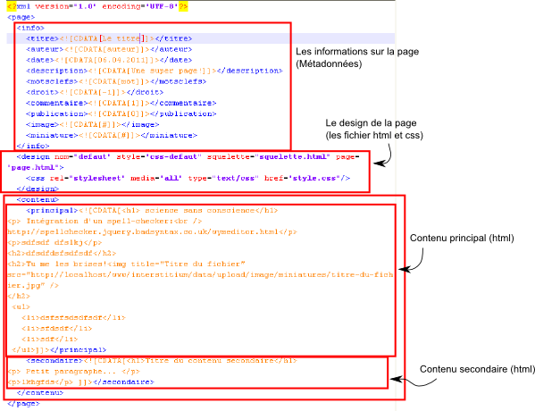

Principe
Ce système de gestion de contenu (CMS, Content Management System) est fondé sur la séparation entre les données (le texte, les articles...) et le design.
Une page internet toute simple est un fichier ayant l'extension .html contenant
bien souvent les données ainsi qu'un lien vers une feuille de style (.css).
Le fichier .html décrit la structure de la page (avec du contenu) tandis que le fichier
.css sert à mettre en forme le fichier .html (couleurs, dimensions, images
de fond).
Comment s'affiche la page sur l'écran de l'ordinateur ? Le navigateur internet (windows explorer par exemple)
envoit une requête au serveur : "Envoit-moi la page www.site.com/lapage.html". Le serveur regarde si cette page
existe chez lui et l'envoie au navigateur qui l'affiche. Dans ce cas-là, le serveur ne fait que d'envoyer des
données, il n'effectue pas de traitement d'information. Les pages sont donc statiques (elles ne changent pas
au cours du temps).
Dans le cas de ce site internet, toutes les informations nécessaires à l'affichage sont contenues dans
un fichier .xml ainsi que dans un fichier .xml contenant l'arborescence du site (le menu).
Le XML ressemble un peu au HTML vu que le HTML est
un dérivé du XML. Ce fichier .xml contient 3 parties principales:
- Les métadonnées (
<info>), c'est-à-dire le nom de l'auteur, la date de création/modification du fichier, la description de la page, les mots-clefs etc. - Le design (
<design>), c'est à dire quels fichiers.htmlet.cssdoivent être utilisés. - Le contenu proprement dit (
<contenu_principal>et<contenu_secondaire>), c'est-à-dire le codeHTMLde l'article (contenu principal) et des informations supplémentaires (contenu secondaire).
.xml :

Dans le cas de ce site, le navigateur envoit au serveur l'url (= l'adresse) de la page, par exemple
www.monsite.com/la-super-page.html.
Le serveur analyse l'url, cherche le(s) fichier(s) de données .xml correspondant. Il lit le(s) fichier(s),
puis cherche les fichiers .html (la structure) et .css (la mise en forme). Il met les données dans
les fichiers .html et affiche le tout. Cela s'appelle du "parsing".
Du côté serveur, celui qui effectue tout ce travail est la langage PHP.

Et voilà par exemple la page que le serveur affiche :